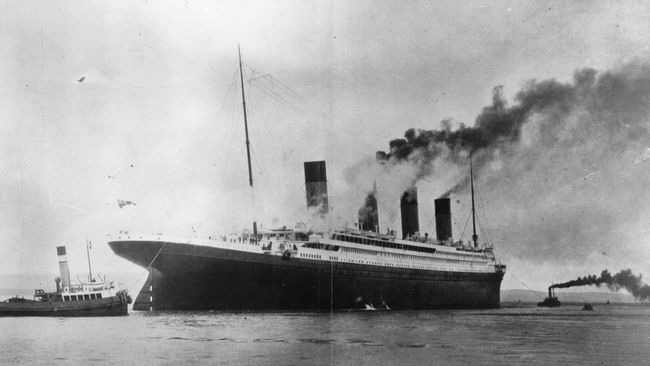
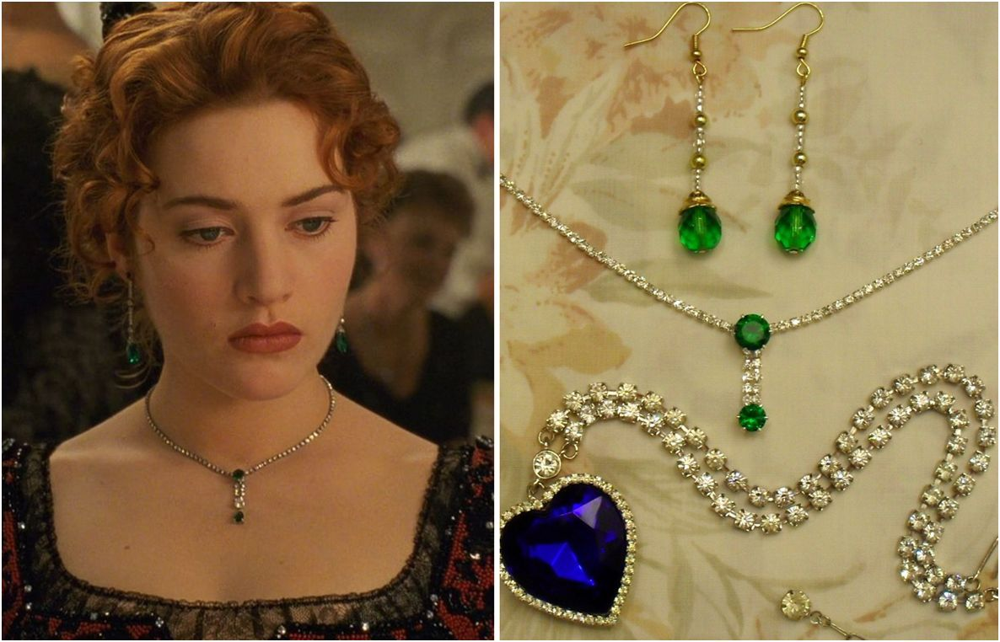
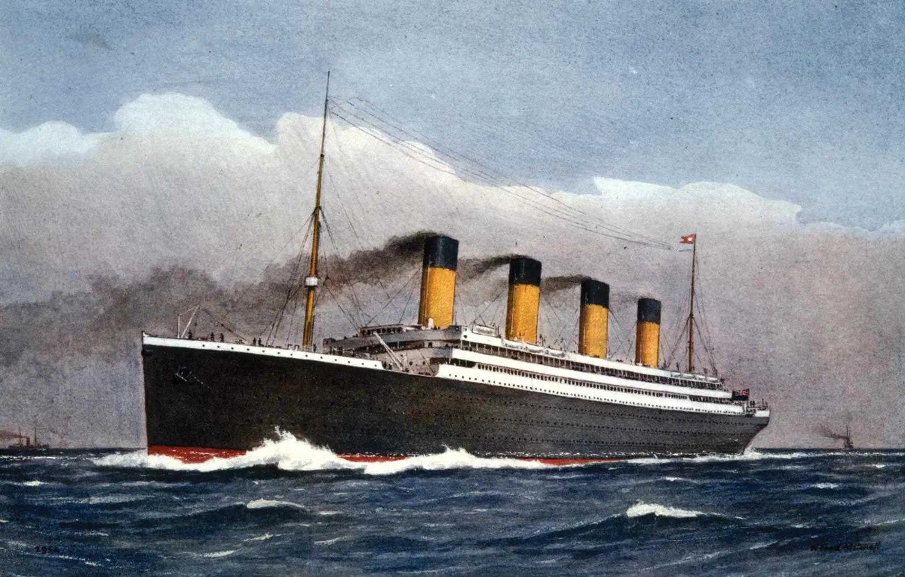
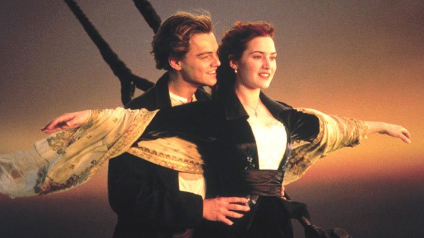

Sinopsis Film

Ada sebuah ekspedisi pencarian harta karun. Tujuan utamanya adalah kalung Heart of Ocean yang dahulu berada di kapal raksasa Titanic. Pencarian itu dilakukan sampai di dasar laut, tepat setelah puluhan tahun kapal Titanic tenggelam. Para penyelam menelusuri seluruh bagian bangkai kapal.

Hingga pada sebuah ruang, mereka menemukan sebuah brankas yang diduga berisi kalung. Saat brankas dinaikkan ke atas kapal, semua orang kecewa. Tidak ada kalung sama sekali. Hanya ada lukisan seorang perempuan telanjang dengan memakai kalung Heart of Ocean di lehernya. Televisi menyiarkan penemuan gambar tersebut. Rose (Kate Winslet), nenek berusia 101 tahun melihat acara tersebut. Rose kemudian meminta sang cucu untuk mengantarkannya ke para penemu lukisan.

Sesampainya di kapal tempat para pencari harta karun berada, Rose mengatakan bahwa perempuan yang ada di lukisan adalah dirinya. Dia kemudian bercerita kisah yang terjadi tahun 1912, saat dia berlayar menggunakan kapal raksasa tercanggih saat itu, Titanic.

Rose merupakan anak bangsawan yang bergelimang harta. Namun suatu hari keluarganya bangkrut. Sang ibu menjodohkan Rose dengan pria dari keluarga terhormat. Hal itu agar kondisi ekonomi keluarga bisa selamat. Tentu Rose tidak suka, tapi dia tetap melakukan demi ibunya. Saat kapal sedang berlayar, Rose berencana melakukan bunuh diri. Namun ada seorang pria bernama Jack (Leonardo DiCaprio) yang mencegahnya.
Sejak saat itu, Rose dan Jack menjadi akrab dan saling mencintai. Mereka menjalin cinta secara sembunyi-sembunyi. Apabila ibu Rose dan calon suaminya tahu, semua bisa berantakan.
Balik Ke Atas